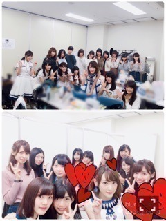
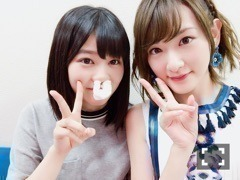
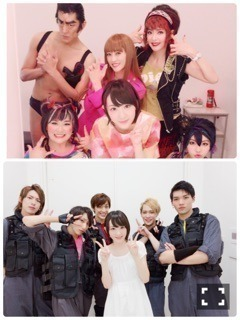
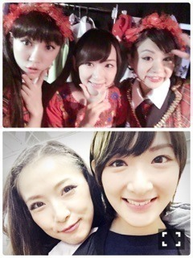

| 2016/10 10 Mon | 載せたい写真いっぱいあるから合体させたよ。 |
やっとやっとやっと
秋になりましたね〜

涼しい最高だぜ
めちゃ秋服買ってる。
全部黒色
またクローゼットが黒くなる。
スニーカーも買っちゃった笑
でもまだまだ欲しいよお洋服。
アクセサリーも欲しいな。
ネックレス。
イヤリング。
リング。
そろそろ新しいシルバーをお迎えしたいなぁ。
と、秋はごはんもですが、
ファッションの秋が強い生駒です！
先週の土曜日、日曜日と
女の子の祭典
ガールズアワード
北九州TGCに
乃木坂からモデルちゃんが何人かランウェイを歩いたり、
アーティストとして参加しました〜ヽ(・∀・)ノ
どちらもトリを飾らせて頂きました。
凄い事ですよね。
ふと最初に出た時、
まだ乃木坂46が知られてなかったなと思い出しました。
そこからの今です。
歓声を頂く。
出させて頂く事に感謝致します。
本当にありがとうございます

モデル様は、やはり何度みてもかわいい！！
すごいな〜
かっこいいし、かわいいし、綺麗だし！！
私の持っているものは全然別の種類だから、
私のものがいかせる表現の形を見つけていきたいなと思い出しました
そんな、
ガールズアワードでは、

突撃！！
隣の欅坂46と
はじめましてひらがなけやきちゃん
を、してきましたヽ(・∀・)ノ
欅ちゃんともどんどん仲良くなりたいし、
ひらがなけやきちゃんにはじめましてってしてきたよ〜ヽ(・∀・)ノ
うぶな感じがかわいかったなヽ(・∀・)ノ
こんな先輩だけど、これからどうぞよろしくね
てち。
君は、急成長してるね。
君はすごいよ。
すごいからこそ、甘える事をしていいんだよ。
私もしっかりした人間になるからねヽ(・∀・)ノ

おぜきちゃん
風邪と花粉症だって〜
この姿でずっとお話ししてたよ。
何だろう可愛すぎる〜
チワワみたい
あ、本人に載せていい許可取りましたのでご安心下さいm(_ _)m
今、あまり絡みはないし、
いろんな考えのメンバーも、ファンの皆さんもいるけれど、
私は46グループ
切磋琢磨して、最強のグループになりたいなぁ。
まだまだ高みはみえていない。
乃木坂の三期ちゃん含め、
46無双するのが、
今の私の夢。
最近までね、
正直、私はグループの中でどうあればいいのか分からなくなっていた。
私は何をすればいいのか？
ここで立っていてよいのか？
プラスなの？マイナスなの？
でも、やらなきゃいけない事、まだまだいっっっっぱいある！！
私がどこまで通用するか分からないけどがんばるぞーー！！
そう、思わせてくれたのは、
間違いなく後輩達。
ありがとうございます！！
さ、ちょっと真面目な話をした後で〜ヽ(・∀・)ノ
載せたい写真載せます！！笑
こち亀で、みんなと写真撮りましたよ〜写真


カメラロールを開くと思い出す素敵な時間。
ここで学んだことをライブで生かしまくりでございます

舞台と言えば
嫌われ松子の一生
若月、れいか
どちらも観にいけたぞー！！！
この2人はすごいや。
尊敬します。
観れて幸せです。
2人のお芝居が大好きです(｡・・｡)
また沢山観たいな〜
ではでは！！
私は明日朝すごい早いんで寝ますっっ！！
おやすみなさい〜
へばなっ☆彡
コメント(1174)
2016/10/10 23:59